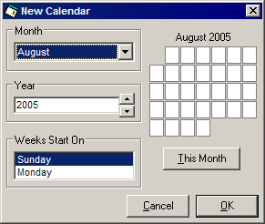

This tutorial will take you briefly through all of the steps necessary to create your own customized web page calendar for any month you choose by unleashing the power of HTML Calendar Maker Pro. Hit the ground running without having to take the time to figure out the inner-workings of the program!
This tutorial will take you briefly through all of the steps necessary to create your own customized web page calendar for any month you choose by unleashing the power of HTML Calendar Maker Pro. Hit the ground running without having to take the time to figure out the inner-workings of the program!
| Step-by-Step Overview |
| Step 1. Open or Create a New Calendar Step 2. Type in the New Events Step 3. Personalize Your Calendar Step 4. Make and Save the Web Page Step 5. Save This Month’s Events |
Step 1 – Open or Create a New Calendar
Start HTML Calendar Maker Pro.
You will see the main calendar window (Figure 1), where all of the events for your chosen month will be entered. It will automatically display the current month.
Note the blue sidebar at the left in the following figure. This sidebar serves as a “mini-tutorial” that can provide hints at every step of the calendar-making process. It works in a manner similar to a web page complete with links and, when you complete this step, back and forward buttons. This tutorial will follow the same order of steps as the sidebar, so you can use the sidebar for further reference along the way.

Figure 1. The Main Calendar Window
If you are planning on making your monthly calendar for the current month that you see in the calendar window, click on the “Use the Current Calendar” option in the sidebar and then skip to Step 2 in this tutorial.
If you wish to create a new calendar for a past or future month, click on the “Start a New Calendar” option in the sidebar. A window, shown below, will appear and will allow you to choose a different month.

Figure 2. The New Calendar Window
Using the New Calendar window, choose any month and year you wish for your calendar. Plus, you can choose to start weeks on a Sunday or a Monday according to your preference. On the right is a preview of the layout of the currently selected month. Below the preview is a button titled “This Month” that, if clicked, will change the month and year back to the present. Once you choose a new month, click OK. You will then be taken to Step 2.
To open a calendar that you previously saved, click on the “Open a Saved Calendar” option in the sidebar. You will be prompted to choose the calendar file you wish to load. If you are told that the program “ran into some complications while trying to open this file,” ensure that you are not attempting to open a web page. The file must be a calendar (.cal) file, which can be saved in Step 5.
Assuming the calendar was opened, you should see your events appear in the event textboxes to the right. You will now be sent to Step 2.
Step 2 – Type in the New Events
Using the text boxes to the right of the main calendar window, type in the events for the corresponding days. If you opened a previously-saved calendar, you can also modify the events that already exist. For each event, you have the following facilities available:
For more information, see the Inserting Elements Tutorial.
All of the above can be inserted using the Insert menu at the top of the main calendar window. When chosen, the item will insert itself within the text box you are currently working on (where the cursor is located). You can also type in web page code (HTML) straight into the text box. When you have entered all of the events, click the Next button in the sidebar.
Step 3 – Personalize Your Calendar
The following are completely optional. You may choose to modify the appearance of your calendar to better suit your site’s design. These settings do not need to be changed every time; your preferences are remembered and will be applied to every web page calendar you create thereafter.

Open the Settings Window
This link, like the other options listed below, opens the Options window. If you would like to explore the Options window on your own, use this. It takes you to the first tab, which allows you to change the color scheme. You can then click on the corresponding tab that you wish to use. See Figure 4, below.
Change the Current Color Scheme
Click on this link or the colored box to the right to change the color scheme for your web page calendar. Note that this will not change any colors in the main calendar window. However, you will see the colors you chose once you view the web page this program creates. The colors in the box to the right represent the colors of the seven different elements (from top to bottom, left to right): background, month title, day background, day foreground, date boxes, date text, and border.
Title Style, Alignment, and Whether to Show Saturdays and Sundays
Choose the alignment and visibility of the month and year title at the top of each of your calendars, plus show Saturdays and / or Sundays in your calendars. (Useful, for example, for showing five-day work weeks.)
Event Box Alignments and Title & Event Fonts
Change the alignments of all events as well as the alignments of the day numbers. Plus, you can choose the font style and size for both the title and the events.
Language and Whether to Abbreviate the Days of the Week
The default language for the months and days is the language you are currently using in Windows. You can also choose German, English, Spanish, French, Italian, and Portuguese. You are also given the option between showing the days of the week abbreviated or in full.
Advanced HTML Settings
Change settings like the name of your calendars, the width of the calendar table, add a header and footer, and choose the naming convention of the web page file.
Now that your events are entered and your preferences have been established, click the Next button.
Step 4 – Make and Save the Web Page
In this step as well as the next step you will be saving the calendar twice: once as a web page and once as a calendar file. The web page contains the calendar in a form suitable for a web browser. The calendar file is required if you intend to access and change the events in the future. HTML Calendar Maker Pro cannot read the elements in the web pages that it creates. However, it can read calendar files.
Figure 4. Choices Presented in Step 4
The above figure shows the options presented the tutorial sidebar at the current step, Step 4. All three are slight variations of one common idea: generate the web page code for your calendar.
Save the Web Page Calendar
This option simply saves your calendar without viewing or modifying its code beforehand. Its code will not be presented to you nor will it be opened in your web browser.
View / Modify the HTML Source
If you wish to see the web page code that was generated, choose this. You will then be presented with a separate window that displays the code, which you can copy selections of the code or all of the code into the Windows Clipboard plus save the code as a web page (in case you want to modify the actual HTML first). There is also the option of previewing the web page, which requires you to save the file and then HTML Calendar Maker Pro will instruct your web browser to open the web page.
Save and Preview the Web Page Calendar
Similar to the first option, but after allowing you to save the calendar it automatically opens the generated web page in your web browser.
Important: In order for your new web page calendar to reach an audience, you must put it on your web site. Consult your service provider for instructions for uploading your web page, as this process can very greatly.
Step 5 – Save This Month’s Events
This step is optional, although it is highly recommended. If you may need to change the current events or add new ones before the month ends, you should save your calendar as a calendar (.cal) file. As mentioned in the previous Step, HTML Calendar Maker Pro needs a calendar file in order to recreate your web page calendar. It cannot read web page (.htm or .html) files.

To save your events so they can be retrieved in the future, click on “Save the Events for Later Use” in the sidebar. You will then be prompted for a location to save the file.
Assuming the file was saved, you can now either “Begin a New Calendar” and return to Step 1 or close HTML Calendar Maker Pro. If you wish to open your calendar file again later, simply refer to Step 1.
Thank you for using HTML Calendar Maker Pro!
Click here for more documentation